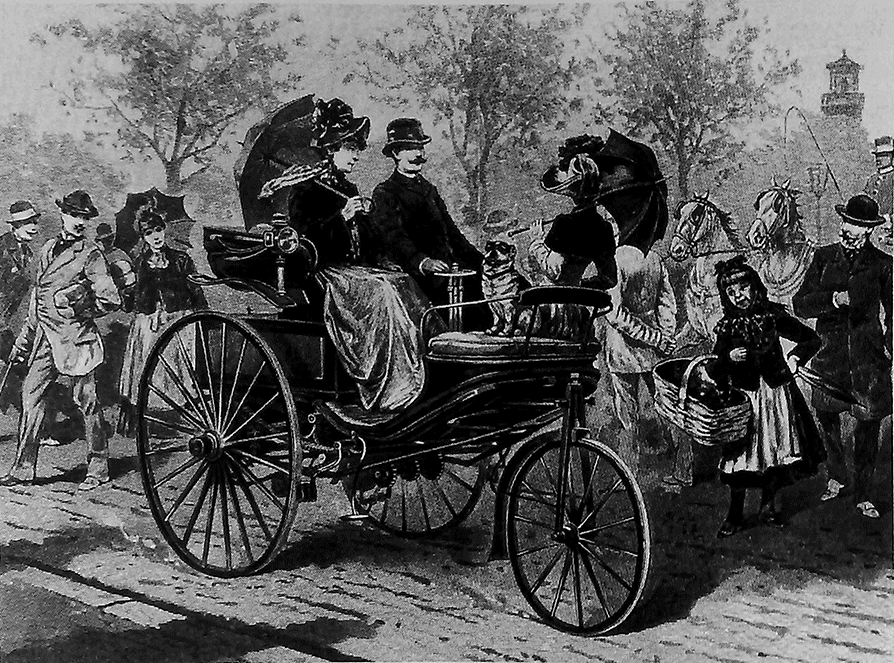
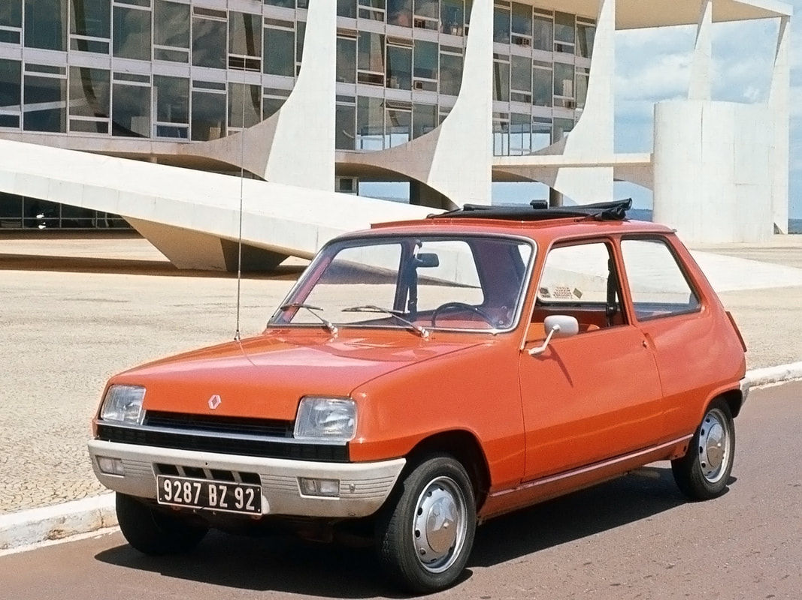
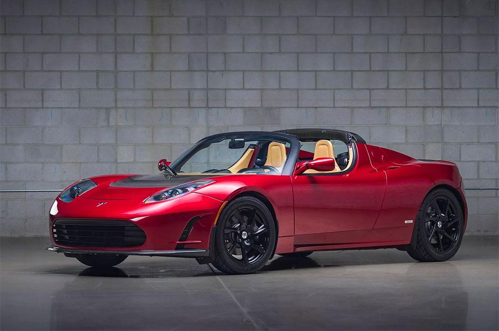

L'HISTOIRE DE L'AUTOMOBILE
1. Débuts (fin du XIXe siècle) :
L'histoire de l'automobile commence véritablement à la fin du XIXe siècle avec l'invention de la voiture à essence. Karl Benz est souvent crédité de la création de la première automobile fonctionnelle en 1886 avec son "Motorwagen". 
2. Massification (début du XXe siècle) :
 Au début du XXe siècle, l'industrie automobile prend son envol, avec Henry Ford introduisant la production en série
en utilisant des techniques d'assemblage à la chaîne. La Ford Model T, lancée en 1908, devient la première voiture abordable pour le grand public.
Au début du XXe siècle, l'industrie automobile prend son envol, avec Henry Ford introduisant la production en série
en utilisant des techniques d'assemblage à la chaîne. La Ford Model T, lancée en 1908, devient la première voiture abordable pour le grand public.
3. Évolution technologique (milieu du XXe siècle) :
Les décennies suivantes voient des progrès significatifs dans la technologie automobile, notamment l'introduction de la transmission automatique,
la propulsion avant, et des innovations en matière de sécurité.

4. Crises et changements (années 1970-1980) :
 Les années 1970 et 1980 sont marquées par des chocs pétroliers, ce qui incite à une prise de conscience croissante sur la consommation d'essence. Cela conduit à des progrès dans l'efficacité énergétique et l'émergence de voitures plus petites et plus économiques.
5. Technologie moderne (fin du XXe siècle à nos jours) :
Les dernières décennies du XXe siècle et le début du XXIe siècle sont caractérisés par l'introduction de technologies avancées notament par Bosch telles que l'injection électronique, l'ABS, les systèmes de navigation, et, plus récemment, l'électrification et l'automatisation avec l'avènement des voitures électriques et autonomes.
6. Émergence des voitures électriques (21e siècle) :
 Les préoccupations environnementales et la recherche de solutions alternatives ont conduit à un intérêt croissant pour les véhicules électriques. Des entreprises telles que tesla ont joué un rôle majeur dans la popularisation des voitures électriques.
7. Vers l'avenir (aujourd'hui) :
L'industrie automobile continue de se transformer avec un accent croissant sur la durabilité, la connectivité, et l'automatisation.
Les constructeurs développent des technologies avancées telles que la conduite autonome et les véhicules électriques dans le but de
créer des moyens de transport plus efficaces et respectueux de l'environnement.
L'histoire de l'automobile est une chronique dynamique et en constante évolution, reflétant les progrès technologiques, les changements sociétaux et les défis économiques tout au long du temps.